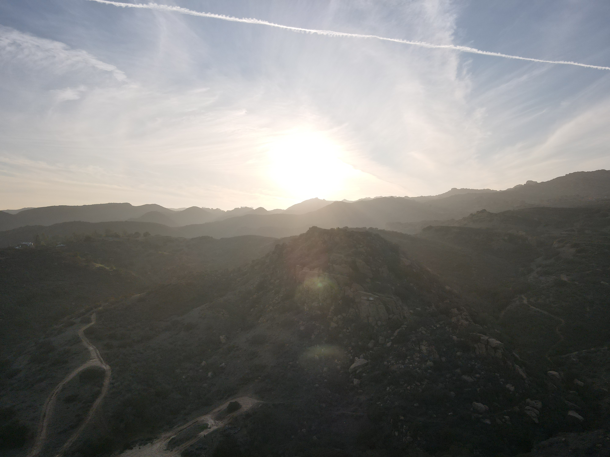

of Chase Van Amburg
Under Construction . . .
I'm Chase, a student at Harvard College studying evolution, ecology, and the complex systems that arise in our world. My goal with this website is sharing simple, interactive simulations of biological phenomena, hopefully bridging the gap between hard science and natural curiosity.
I've taken inspiration from the work of a few specific individuals, especially Nicky Case and Dirk Brockmann. If you know me, please feel free to reach out with thoughts and advice as I begin my journey into web design and science communication.
- Chase

Box Canyon, Los Angeles, CA: Shot on DJI Mavic Air 2